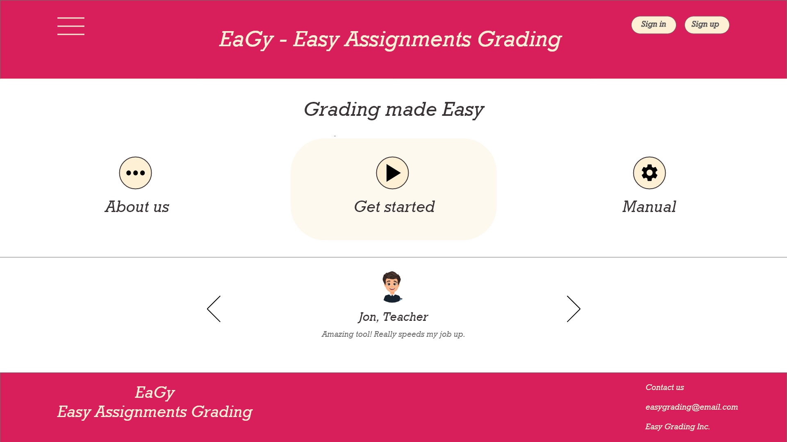
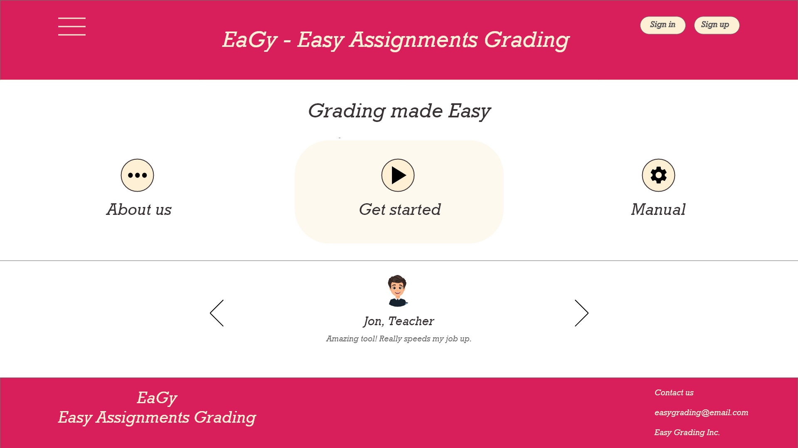
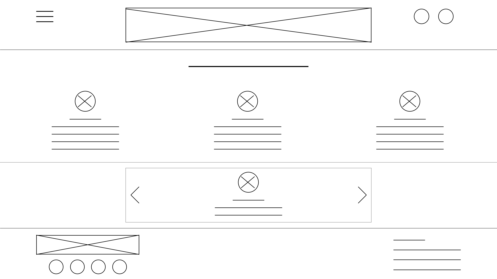
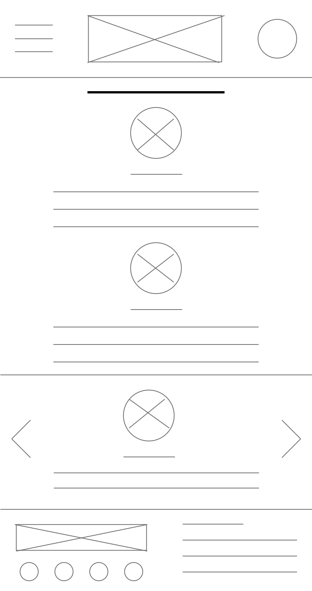
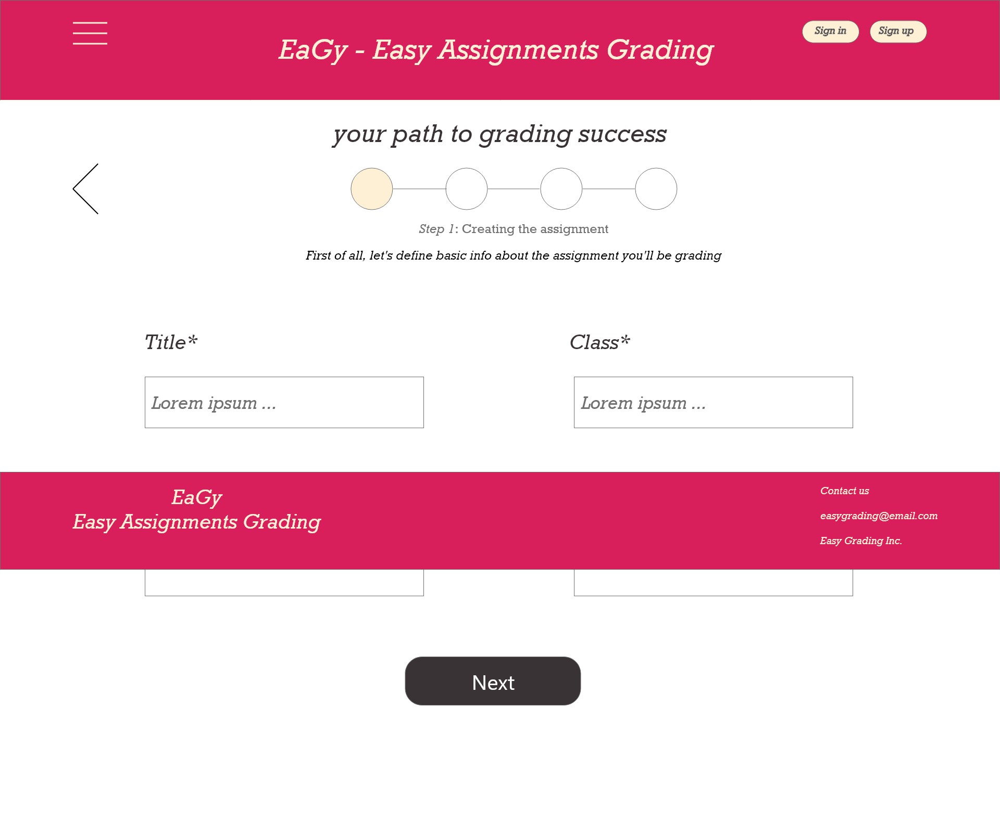
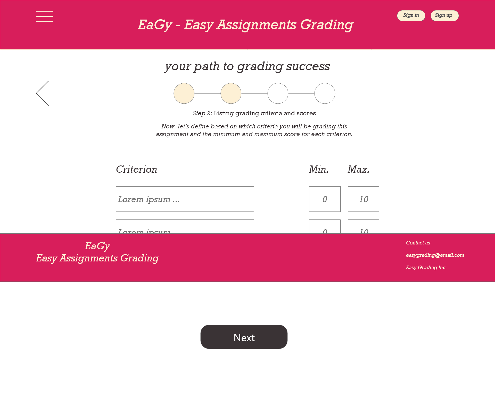
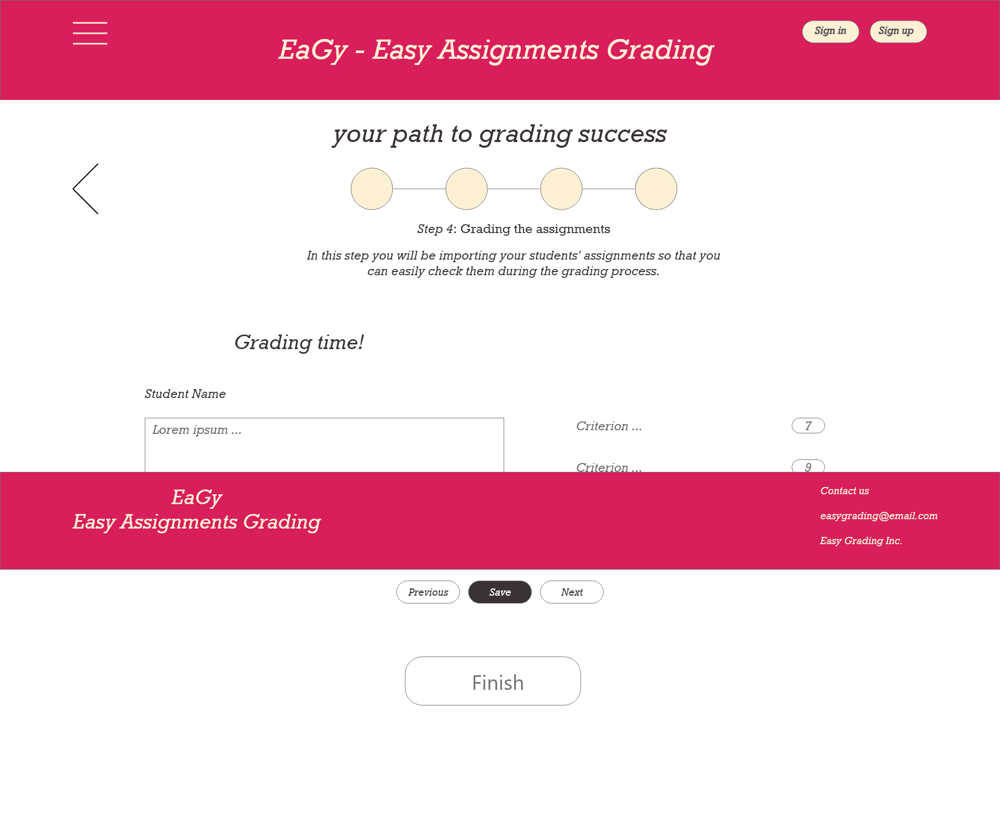
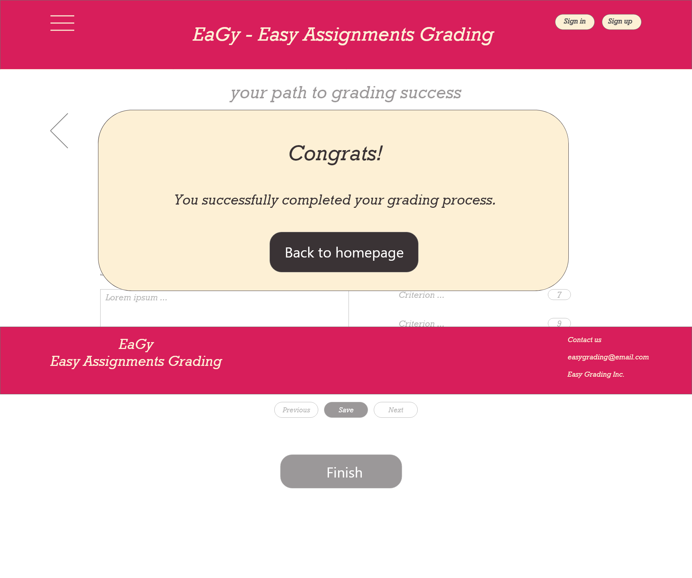
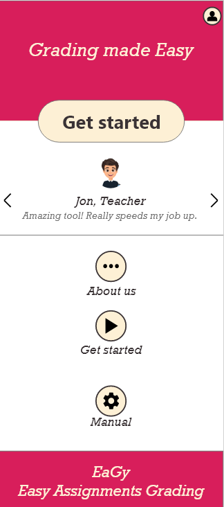

Welcome!

This was one of my projects for the Google UX Design certification. So, I was the Lead Designer (and only member of the project), taking care of the following responsibilities: Research, Ideation, Prototyping, and Testing.

This was one of my projects for the Google UX Design certification. So, I was the Lead Designer (and only member of the project), taking care of the following responsibilities: Research, Ideation, Prototyping, and Testing.
The goal of this project was to design an assignment grading flow for a school in your hometown.
The target audience of this project was teachers who need to grade their students' assignments effectively and efficiently .
Besides the challenges related to the needs of this project's audience, the main challange was the need to design this grading flow as a responsive website.
To understand the pain points of this project's audience, I researched the regular agenda and tasks local teachers follow. Mainly, I found that the potential users of this assingment grading flow website often i) work on more than one school at the same time and ii) teach several at-risk students. So, I concluded the problem I'm dealing with is that teachers need to effectively and efficiently grade assignments so they can provide quick feedback to help their students.
In this responsive website project, I started by creating the sitemap. Here, I interpreted an assignment grading flow as a sequencial task, which led to the following sitemap:

Next, I created wireframes for web and mobile sizes. Here are one example of each size for the homepage:


Based on the wireframes, I wanted to understand whether users were able to successfully complete the grading task, difficulties they faced in interpreting the wireframes' visual cues, and how I could facilitate usage. As results, I found that the scroling feature wasn't clear enough and that users wanted feedback regarding at which point of the grading process they are.
Based on the usability study results, I revised my designs to i) show in which step of the process users are and ii) fix the footer bar so that elements below it will partially appear and draw users' attentions. Here are the five interfaces users pass through to complete the grading process:





To exemplify the responsive design, the following figure shows the mobile design of the homepage.

By working in this project, I had the opportunity to learn how to design a responsive website. Additionally, I could put in practice the skills I got from the previous Google UX Design courses to reinforce them. If implemented, this responsive website grading flow would help teachers concentrate their work on a single tool and grade every assignment based on specific criteria they select. This would not only facilitate teachers lives, but student's by increasing feedback speed and consistency.
Want to know more about this project? Please don't hesitate to contact me at luiz.r70@gmail.com!